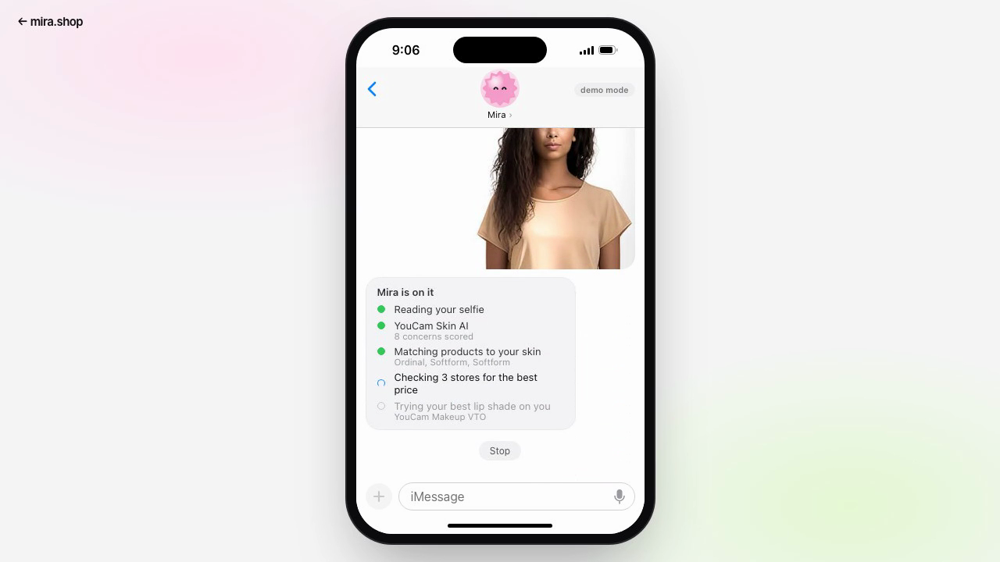
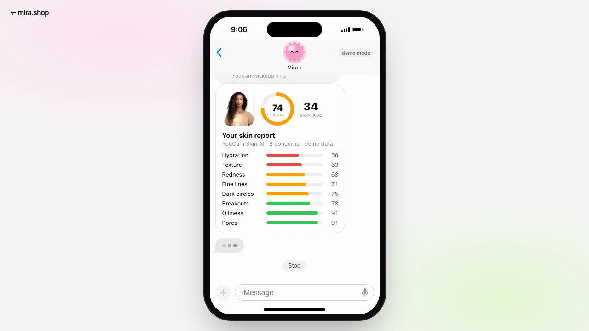
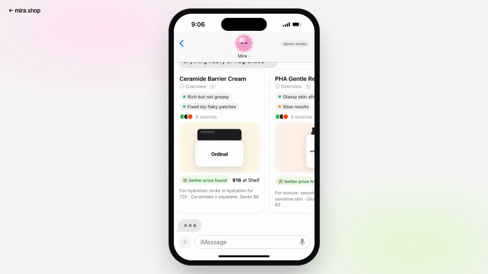
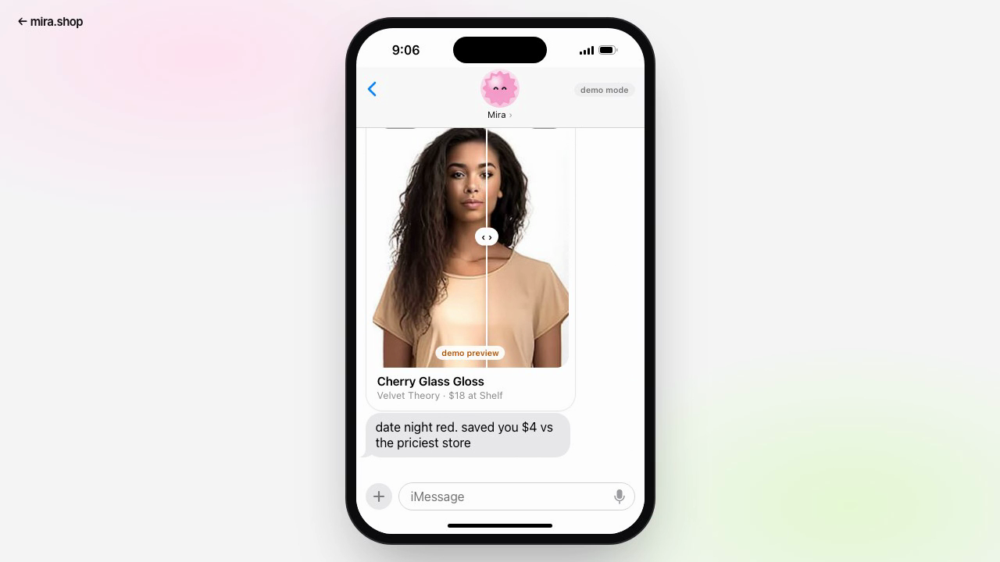
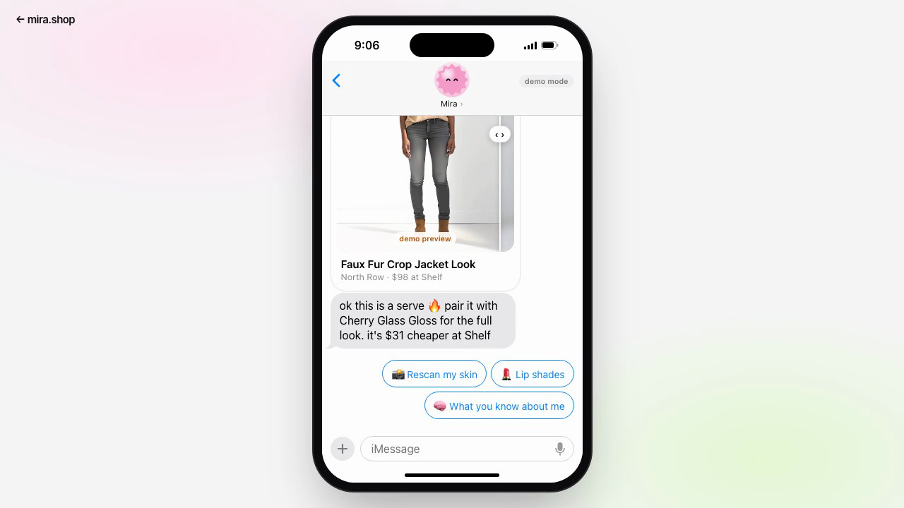

YouCam API Skin AI & eCommerce VTO Hackathon
Meet Mira
Your free AI beauty & style assistant, right in iMessage
AI Skin AnalysisMakeup VTOAI Clothes
The problem
You wonder about your skin right before you buy.
- A quiz instead of a measurement
- A serum that breaks you out
- A lipstick that looked better on the model
- Full price at the first store, then a return
Mira turns that moment into one text message.
How it works
One selfie starts an agent

- Read your skin with YouCam AI Skin Analysis: 8 concerns, skin age, heat maps
- Match products to your 3 weakest scores
- Check 3 stores for the best verified price
- Try it on, unprompted: a lip shade chosen from your redness score, rendered with Makeup VTO
- Remember skin type, shade and score history
The product
Skin report, picks, try-on, full look




YouCam API integration
Three APIs, one conversation
| AI Skin Analysis | /s2s/v2.0/task/skin-analysis | 8 SD concerns, masks, skin age · about 6 to 9 s |
| Makeup VTO | /s2s/v2.0/task/makeup-vto | lip_color picked by the agent · about 8 s |
| AI Clothes | /s2s/v2.0/task/cloth-v4 | full look on your photo · about 14 s |
Node server keeps the key private: register file, PUT to presigned URL, create task, poll. Self healing retry when the face is too small, friendly errors for every YouCam code, result cache so units are never spent twice.
Impact & next
Measured, tried on, cheapest seller.
- Shoppers: fewer wrong purchases and returns, no account, no app install
- Retailers: a conversational storefront that sells what fits the customer's skin
- Next: real catalog and price feeds, Skin Tone for foundation, weekly check in scans, native iMessage relay
Mira. Your skin, your face, your price.